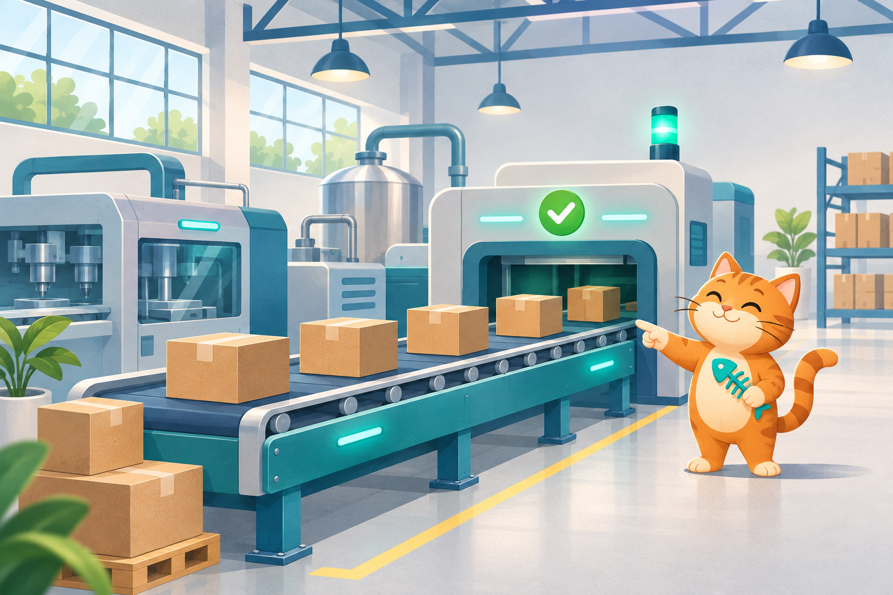

Sua missão: colocar a fábrica de volta nos trilhos.
Durante quatro semanas, planeje mudanças, veja o que funciona e ajuste a operação.

Planeje
Execute
Confira
Ajuste
Durante quatro semanas, planeje mudanças, veja o que funciona e ajuste a operação.
